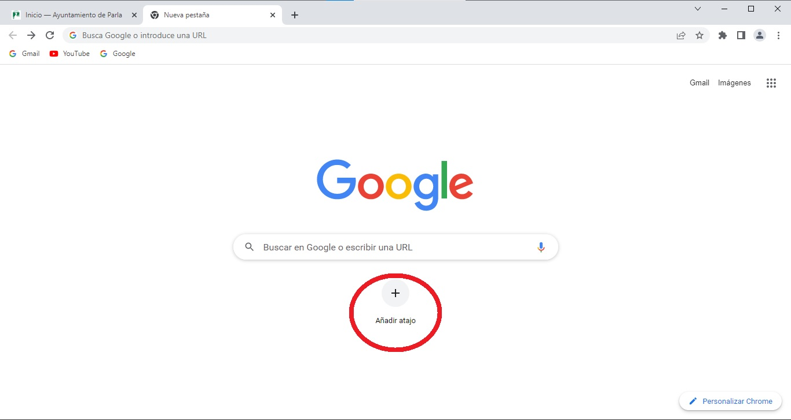

Uso de Google Chrome
- Barra de direcciones: en esta barra escribimos la dirección de la página web que queremos visualizar. Funciona también como cuadro de búsqueda, solo tenemos que escribir una o varias palabras relacionadas con la página que queremos buscar. Al comenzar a escribir, nos aparecen más abajo una serie de sugerencias.
- Pestañas: Nos permite tener abiertas varias páginas webs en una sola ventana. Al pulsar en una pestaña determinada, podremos visualizar la página web que contiene.
- Panel lateral: para acceder a él pulsamos el botónsituado en la esquina superior derecha. Aparece, entonces, una zona a la derecha en la que podremos guardar marcadores, páginas web que queremos leer después (lista de lectura) y los recorridos de búsquedas que hayamos realizado previamente.
- Historial: lista de páginas visitadas recientemente. Se accede a él con CRTL+H o desde el menú de configuración en la esquina superior derecha

- Marcadores: añadiremos como marcadores las páginas web que visitemos con frecuencia para disponer así de una manera más cómoda y rápida de acceder a ellas. Para ello, teniendo la página abierta, pulsamos el botón que aparece en la barra de direcciones. Podremos guardar la referencia en la carpeta Marcadores o en otra carpeta nueva que creemos. Al añadir a marcadores la página, automáticamente nos aparecerá debajo de la barra de direcciones un acceso rápido a la misma.
- Descargas: cuando en una web pulsamos para realizar una descarga de un archivo, la notificación de la descarga aparecerá en la esquina inferior izquierda de la ventana. Al pulsar en ella, nos aparecerá un menú con varias opciones (Mostrar en carpeta, abrir...)
- Modo incógnito: se usa para navegar de forma privada sin que los demás usuarios de ese dispositivo vean tu actividad. Chrome no almacenará la siguiente información:
- El historial de navegación
- Cookies y datos de sitios
- Información introducida en formularios
Sí se guardan las descargas, los marcadores y los elementos de la lista de lectura.
- Añadir atajo: sirve para añadir un acceso rápido a una página web.

- Personalización. Chrome Web Store: tienda donde se ofrecen utilidades, extensiones y complementos para personalizar el navegador como deseemos.
-
Sincronización con otros dispositivos. Iniciar sesión : podemos identificarnos en el navegador si tenemos una cuenta de Google. Ello nos permitirá acceder a las páginas favoritas, contraseñas guardadas, historial y configuraciones desde cualquier ordenador o dispositivo móvil con sistema operativo iOS o Android.
- Gestionar extensiones:
- Instalar una extensión
- Quitar una extensión